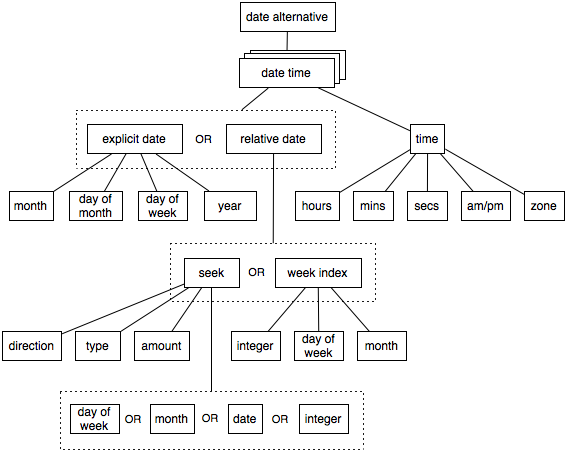

some words of wisdom
how it works
Natty makes heavy use of ANTLR to tokenize and parse its input into a generic abstract syntax tree, and then walk that tree to determine the date(s) represented. Natty attempts to recognize a wide range of date formats, but since there is an inherent ambuigity in the grammar describing these formats, some decisions need to be made arbitrarily. For example, given the string: '10/10 500', we could interpret this as "october 10th at 5 o'clock" or as "october 10th in the year 500". Given this choice, natty will choose the former with the reasoning that people don't typically reference dates that are centuries away from the present.
The abstract syntax tree (AST) approach allows us to minimize the actual code we need to write (as opposed to the code generated for us by ANTLR,) to just a few date manipulation methods (see WalkerState.java). Another advantage to this approach is the theoretical ease at which natty could be ported to another target language. For the more curious, here's a rough sketch of the AST structure used:
supported formats
Following is an attempt at cataloging the date formats that natty recognizes. For the formal grammar definition, see DateParser.g.- formal dates
-
Formal dates are those in which the month, day, and year are represented as integers separated by a common separator character. The year is optional and may preceed the month or succeed the day of month. If a two-digit year is given, it must succeed the day of month.
- 1978-01-28
- 1984/04/02
- 1/02/1980
- 2/28/79
- relaxed dates
-
Relaxed dates are those in which the month, day of week, day of month, and year may be given in a loose, non-standard manner, with most parts being optional.
- The 31st of April in the year 2008
- Fri, 21 Nov 1997
- Jan 21, '97
- Sun, Nov 21
- jan 1st
- february twenty-eighth
- relative dates
-
Relative dates are those that are relative to the current date.
- next thursday
- last wednesday
- today
- tomorrow
- yesterday
- next week
- next month
- next year
- 3 days from now
- three weeks ago
- date alternatives
-
Natty is able to reconize a list of date alternatives. This is the reason why the
ParseResultalways contains aListofDateobjects.- next wed or thurs
- oct 3rd or 4th
- prefixes
-
Most of the above date formats may be prefixed with a modifier.
- day after
- the day before
- the monday after
- the monday before
- 2 fridays before
- 4 tuesdays after
- time
-
The above date formats may be prefixed or suffixed with time information.
- 0600h
- 06:00 hours
- 6pm
- 5:30 a.m.
- 5
- 12:59
- 23:59
- 8p
- noon
- afternoon
- midnight
- relative times
-
- 10 seconds ago
- in 5 minutes
- 4 minutes from now
- time zones
-
Any time may be suffixed with time zone information. Any arbitrary GMT
offset may be given in the form +00:500, -0600, etc. Common American
and Pacific time zone abbreviations may also be used. If you'd like
to help add common abbreviations for your locale, feel free to contact
us (via github)
- +0500
- -08:00
- UTC
- EST
- EDT
- ET
- CST
- PST
- PDT
- PT
- MST
- AKST
- HAST